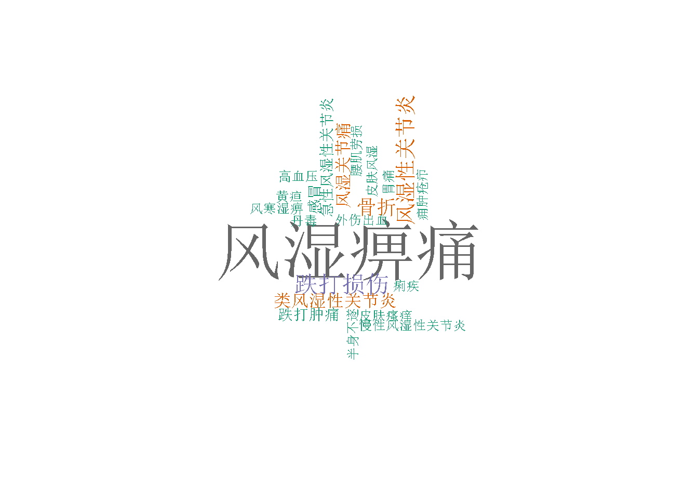

Exploration of Arthritis-like Diseases
The concept of 风湿 (FengShi) in Chinese Herbal Medicine:
- FengShi, is an ancient Chinese diagnosis which included Arthritis (& Rheumatoid Arthritis,RA), Osteoporosis, Body/Joint Pain & deformities.
- The etiology of this group of symptoms are considered as the invasion of ‘cold’ & ‘moisture’ essences into human body, and show significant symptoms (sore, pain, & deformation) on body muscles/bones, major joints (like knee, wrist).
Explore Herbs’ Cures Targeting ‘FengShi’:
(search keywords contain ‘风湿’ or ‘风’&‘湿’ among herbs’ ‘Cures’)
Among all 7785 herbs collected, there are 50 herbs’ ‘Cure’ contain the keyword ‘风湿’ or ‘风’&‘湿’;
Among these herbs would cure FengShi, a word cloud of all their ‘Cures’(or say symptoms, occurred >1 times) is shown below:

From above word cloud, we can see that beyond ‘风湿’, these herbs also cure ‘跌打损伤’(Damages by Falling & Beaten), ‘骨折’(Fracture), etc, which highly related to pain, tissue (muscle or bone) damages.
Explore the Herbal Prescriptions Could Cure FengShi:
Among all 51974 herbal prescriptions collected, there are 529 of them contain the key work ‘风湿’ or ‘风’ & ‘湿’;
Among the prescriptions could cure FengShi, a word cloud of all their ‘Cures’(or say symptoms, occurred >1 times) is shown below:
- And by exploring the prescriptions’ components, a word cloud of the herbs’ components(occurred >1 times) is shown below:

- From above word cloud, and based on findings from other exploration, the herb ‘甘草’(Licorice) was usually used as a mediator to harmony different herbs, so exclude ‘甘草’, we see ‘防风’, ‘当归’, ‘羌活’, ‘白术’, ‘苍术’, ‘川芎’, ‘独活’, ‘地黄’ are highly involved in the prescriptions treating FengShi
- A further exploration of the chemical constituents in these herbs are summarized below: (constituents in red are the same ingredients shown in different herbs)
| Herb | English Name | Main Chemical Constituents | Reference |
|---|---|---|---|
| 防风 | Saposhnikovia divaricate | 5-O-甲基維斯阿米醇苷(5-O-methylvisammioside), 升麻素苷(prim-O-glucosylcimifugin), 升麻素 (cimifugin), 亥茅酚苷(sec-O-glucosylhamaudol), 亥茅酚(hamaudol), 香豆素(coumarin), 挥发油(volatile oil), etc | 防風化學成分與藥理研究進展 |
| 当归 | Angelica sinensis | 黄樟醚(safrol), 异黄樟醚(isosafrol), 佛手柑内酯(bergapten), 正丁基酜内酯(butylphthalide), 藁本内酯(Ligustilide), 芹内酯(sedanonic acid lactone), 花椒毒素(xanthotoxin), 异虎耳草素(isopimpinellin), 香荆芥酚(carvacrol), 苯戊酮邻羧酸(valerophenone-O-carboxylic acid), 棕榈酸(palmitic acid), 崀菪葶(scopoletine), 繖形酮(umbelliferone), 香夹兰酸(vanillic acid), 胆碱(choline), falcarinol | 当归化学成分的研究 |
| 羌活 | Notopterygium incisum | 异欧前胡内酯(isoimperatorin 0.38%), 8-甲氧基异欧前胡内酯(cnidilin 0,5-羟基香柑素(notopterol) 1.2%), 香柑内酯(bergapten 0.009%), 5-羟基-8-(3,3-二甲基烯基)-补骨脂内酯(5-hydroxy-8(3,3-dimethylally)-psoralen,0.012%), 5-去甲基香柑醇(bergaptol 0.088%), 紫花前胡甙元(nodakenetin0.04%), 香柑醇-O-β-D-吡喃葡萄糖(bergaptol-O-β-D-glucopyranoside0.075%), 6-O-反-阿魏酰紫花前胡甙(6-O-trans-feruloylnodakenin0.022%), 二氢山芹醇(colrmbianetin), 二氢山芹醇甙(columbiananine), 欧前胡内酯(imperatorin), 印度榅桲素(marmesin), 对-羟基苯乙基茴香酸酯(p-ydroxyphenethylanisate 0.005%), 阿魏酸(ferulicacid 0.89%), β-谷甾醇葡萄糖甙(β-sitosterolglucoside), β-谷甾醇(β-sitosterol), and a bunch more, pls see ref | 羌活百度百科 |
| 白术 | Atractylodes macrocephala | 蒼朮酮(Atractylon), 蒼朮醇(Atractylol), 白朮內酯I (Atractylenolide I), 白朮內酯II (Atractylenolide II), 白朮內酯III (Atractylenolide III), | 白朮化學成分與藥理研究進展 |
| 苍术 | Swordlike Atractylodes Rhizome | 苍术素(atractylodin), β-桉油醇(β-eudesmol), 茅术醇(hinesol), 羟基苍术酮(hydroxy-atractylon) | 苍术提取物百度百科 |
| 川芎 | Ligusticum chuanxiong Hort. | 川芎嗪(chuanxiongzine) / 四甲基吡嗪(te-tramethylpyrazine), 1-(5-羟甲基-2-呋喃基)-9h-吡啶并[3,4-b]吲哚(1-(5hydroxymethyl-2-furyl)-9H-pyrido[3，4-b]indole), 藁本内酯(Ligustilide), 川芎萘呋内酯(wallichilide), 3-亚丁基苯酞(3-butylideniphthalide), 3-亚丁基-7-羟基苯酞(3-butylidene-7-hydroxyphthalide), (3S)-川芎酚((3S)-chunxiongol), 3-正丁基-3，6，7-三羟基-4，5，6，7-四氢苯酞(3-n-bntyl-3,6,7-trihydroxy-4,5,6,7-tetrahydrophthalide), 新川芎内酯(neocin-dilide), 洋川芎内酯(senkyunolide), 香草酸(vanillic acid), 咖啡酸(coffeic acid), 原儿茶酸(protocatechuic acid), 阿魏酸(ferulic acid), 大黄酚(chrysophanic acid), 瑟丹酮酸(sedanonic acid), L-异亮氨酰-L-缬氨酸酐(L-isoleucyl-L-valine anhydride), L-缬氨酰-L-缬氨酸酐(L-valyl-L-valinc achydride), 黑麦草碱(perlolyrine), 氯化胆碱(chloine chloride), 棕榈酸(palmitic acid), 香草醛(vanillin) | 川芎百度百科 |
| 独活 | 甲氧基欧芹素(Osthole), 二氢欧山芹素(Columbianedin), 二氢欧山芹醇乙酸酯(Columbianetin acetate), 二氢欧山芹醇(Columbianetin), 佛手柑内酯(Bergapten), 欧芹烯酚(Osthenol), 当归醇(Angelol), 花椒毒素(Xanthotoxin), 异欧前胡素(Isoimperatorin), 异当归醇(Isoangelol), 毛当归醇(Anpubesol), 二氢欧山芹醇葡萄糖苷(Columbianetin-β-D-glucopyranoside), 伞形香豆素(Umbelliferone), 尤劳帕替醇(Ulopterol), 彼西丹醇(Peucedanol), 水合氧化前胡素(Oxypeucedanin hydrate), 紫花前胡苷(Nodakenin), 阿彼斯基姆素(Apiosylskimmin), 胡萝卜苷(Daucosterol), 腺苷(Adenosine) | 独活知乎 | |
| 地黄 | Rehmanniaglutinosa | 梓醇(Catalpol), 桃叶珊瑚苷(Aucubin), 地黄苷A,B,C,D(Rehmannioside A,B,C,D), 胡萝卜苷(Daucosterol), 8-表番木鳖酸(8-Epiloganic acid), 水苏糖(Stachyose), 棉子糖(Raffinose), 苯甲酸(Benzoic acid), 辛酸(Caprylic acid), β-谷甾醇(β-Sitosterol), 豆甾醇(Stigma sterol),益母草苷(Leonuride) | 地黄知乎 |